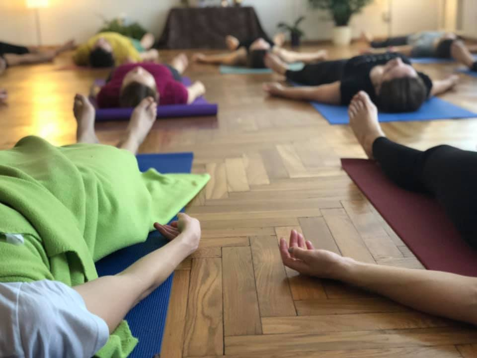
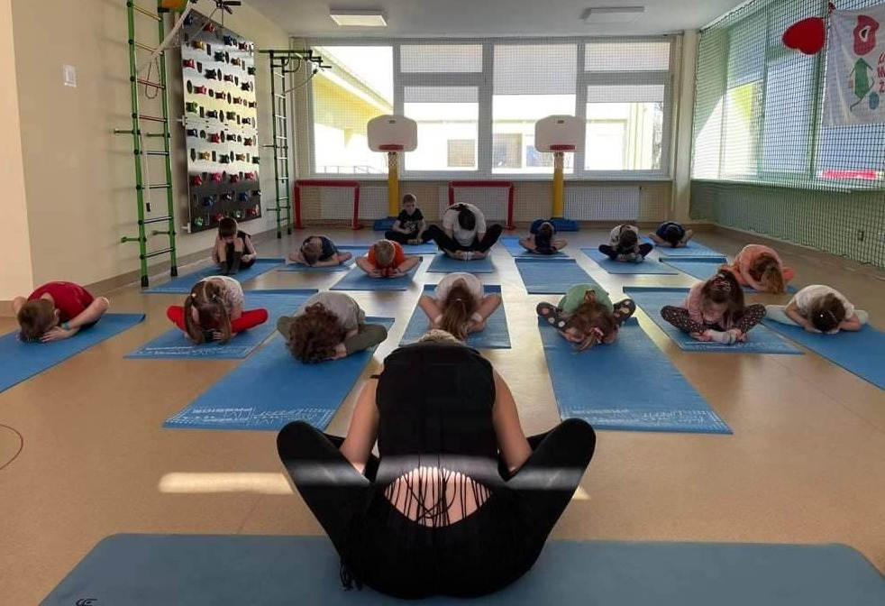

Yin Joga
Yin joga yra lėta ir meditatyvi jogos praktika, skirta giliesiems jungiamiesiems audiniams, tokiems kaip raiščiai, fascija, sąnariai ir kaulai. Asanos laikomos ilgiau – nuo kelių iki keliolikos minučių – siekiant sumažinti įtampą, pagerinti lankstumą ir ugdyti sąmoningumą. Yin joga skatina atsipalaidavimą ir vidinę ramybę.
 Užsisakykite Yin jogos treniruotes
Užsisakykite Yin jogos treniruotes
Nidra Joga
Joga Nidra – tai gilaus atsipalaidavimo ir sąmoningo poilsio praktika, dažnai vadinama „joginiu miegu“. Praktikos metu žmogus išlieka sąmoningas, pasiekdamas būseną tarp budrumo ir miego – tai leidžia atsipalaiduoti giliai, tiek kūniškai, tiek emociškai.
 Užsisakykite Nidra jogos treniruotesJuoko Joga
Juoko joga sujungia juoką be priežasties su kvėpavimo pratimais (pranayama). Sukurta gydytojo Madan Kataria, ši praktika remiasi idėja, kad kūnas neatskiria dirbtinio juoko nuo tikro – abu turi vienodą teigiamą poveikį mūsų savijautai.
 Užsisakykite Juoko jogos treniruotes
Užsisakykite Juoko jogos treniruotes
Joga vaikams
Joga vaikams – tai linksma, žaisminga praktika, padedanti vaikams lavinti dėmesingumą, pusiausvyrą, vaizduotę ir emocinę sveikatą. Ji dažnai vyksta per žaidimus, pasakas ir kūrybines užduotis, todėl ypač mėgstama mažųjų.
 Užsisakykite jogos treniruotes vaikamsJoga nėščiosioms
Joga nėščiosioms – tai specialiai nėščioms moterims pritaikyta jogos forma, kuri padeda palaikyti fizinę ir emocinę gerovę nėštumo metu. Ji skiriasi nuo įprastos jogos tuo, kad pratimai (asanos), kvėpavimo technikos ir atsipalaidavimo metodai yra saugūs bei tinkami besilaukiančiai moteriai ir vystomam vaisiui.
 Užsisakykite jogos treniruotes vaikams
Užsisakykite jogos treniruotes vaikams